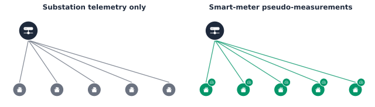

load_data: (342, 365, 48) (customers, days, half-hours)Part 8 Chapter 6: Can Smart-Meter Readings Fill In What the Grid Cannot See
Every earlier chapter in this part assumed the network’s own state was already known. Part 4 solved it directly with OpenDSS; Part 8 Chapter 5 swept it across scenarios. Real low-voltage networks do not hand that over for free. Below the substation, most real feeders have no real-time telemetry at all: a Distribution System Operator (DSO) often cannot say what a specific customer’s own bus voltage is right now without a truck roll. Distribution System State Estimation (Distribution System State Estimation (DSSE)) is the established technique for inferring a network’s full state from whatever real measurements exist, plus a network model. The real, checkable question this chapter asks: can smart-meter readings, treated honestly as imperfect pseudo-measurements, serve as that missing data, and how much of it is actually needed?
Three chained questions structure what follows:
- Can a DSO with only substation-level telemetry, the real, typical starting point below the substation, run state estimation on this feeder at all?
- Do smart-meter readings, treated as real pseudo-measurements rather than assumed to work, restore that ability, and how much coverage does it actually take?
- Is a handful of real branch-level sensors a genuine substitute for the last mile of that coverage, or does that assumption need checking too?
Setup: a second power-flow engine, for one real reason
OpenDSS, this book’s own power-flow engine everywhere else, has no real Weighted Least Squares (WLS) state-estimation module of its own; its own documentation says as much directly, only a narrower load-allocation feature exists [1]. pandapower does have one, pandapower.estimation, real and well-established since Schweppe and Wildes first formalized the problem [2], so this chapter adds it as a second, narrowly-scoped dependency, reusing Part 4’s own AusNet network model rather than building a new one.
Key Concept
Weighted-least-squares state estimation finds the state \(x\), voltage magnitude and angle at every bus, that best explains a real, noisy set of measurements \(z\), minimizing \[ J(x) = \sum_i \frac{\big(z_i - h_i(x)\big)^2}{\sigma_i^2} \] where \(h_i(x)\) is what measurement \(i\) would read given state \(x\), computed directly from the same real power-flow equations OpenDSS solves, and \(\sigma_i\) is that measurement’s own assumed uncertainty, a real substation voltage transformer trusted far more than a periodic smart-meter reading. A real measurement and a pseudo-measurement enter this same objective identically; the only difference is \(\sigma_i\), honestly reflecting how much that source is actually worth trusting.

\(J(x)\) is nonlinear, since \(h(x)\) is the same nonlinear AC power-flow map OpenDSS itself solves, so pandapower.estimation cannot minimize it in one step. It linearizes around the current estimate and repeats, the same Gauss-Newton update every iterative real WLS solver uses: \[
x^{(k+1)} = x^{(k)} + \big(H^\top R^{-1} H\big)^{-1} H^\top R^{-1} \big(z - h(x^{(k)})\big)
\] where \(H = \partial h / \partial x\) is the measurement Jacobian, evaluated fresh at each \(x^{(k)}\), and \(R = \text{diag}(\sigma_i^2)\) collects every measurement’s own assumed uncertainty into one matrix. The real solvability condition sits inside that update, not just in a raw count: the gain matrix \(G = H^\top R^{-1} H\) must be nonsingular, or there is no unique correction to compute at all. \(2N - 1\) real, independent measurements for \(N\) buses (voltage magnitude and angle everywhere but the slack reference, whose own angle is fixed by definition) is a real, checkable necessary condition for that [2], counted directly below against this network’s own real topology; it is not automatically sufficient, since measurements clustered on the same few buses can still leave \(G\) singular even at a passing count. pandapower.estimation checks the necessary count itself, before ever attempting the update above, and refuses to run at all when it fails, exactly the real behavior the substation-only case below hits.
Methodology, concretely: every scenario in this chapter reuses one real evening-peak load (below), builds a fresh copy of the network with a fixed set of real substation measurements (always present) plus whichever smart-meter pseudo-measurements or branch sensors that scenario adds, declares this network’s own real zero-injection buses explicitly rather than via a heuristic, and calls pandapower.estimation.estimate() with init="flat". A scenario is observable when that real measurement count clears \(2N-1\); it is solved when the iterative update above actually converges to a real, non-empty result, since a network can clear the necessary count and still fail numerically right at that boundary, a real distinction checked explicitly throughout rather than assumed away.
Converting the network, and checking the conversion before trusting it
from_opendss builds a balanced, positive-sequence pandapower network directly from the same real LVcircuit-master.txt Part 4 and Part 8 Chapter 5 both use, no hand-rolled bus-by-bus translation needed. Two real issues surfaced when this was checked directly against OpenDSS’s own solve, rather than trusted on faith. First, the converter needs Set VoltageBases/CalcVoltageBases already applied, the same step this book’s own Circuit.load() wrapper already runs; without it, every bus loses its voltage base and the transformer gets silently dropped. Second, even with that fixed, the converter assigns the transformer’s own secondary rating from the declared system voltage base (0.400 kV) instead of the transformer’s own real nameplate rating, confirmed directly from LVcircuit-transformers.txt’s own kVs=[22 0.433], an 8% voltage error otherwise.
Both fixes are verified, not assumed: with the network’s own nominal placeholder loads (no real customer data applied yet), pandapower’s own re-solved voltage matches OpenDSS’s own solve to four decimal places.
Ground truth: what a fully-instrumented network would show
A real customer-to-bus assignment, the same convention Part 8 Chapter 5 already uses, and one real test-day, evening-peak half-hour.
Solving the converted network with every real load in place gives the one thing a real DSO never has directly: the true voltage at every single bus, used below only to check each scenario’s own estimate against, never fed to the estimator itself.
Can a substation-only DSO solve this at all?
zero_injection lets the WLS solver treat every real junction bus with no customer of its own, confirmed directly from the network’s own topology (29 of them here), as an exact constraint rather than an unknown, real structure this network already has, not an assumption. Even with that structure exploited, a DSO with only its own substation-level voltage and power telemetry is checked directly against the real observability requirement above rather than assumed to clear it.
No: this feeder’s own real topology needs real information at every one of its 31 real customer buses, or an explicit zero-injection exemption, and a real substation-only DSO has neither for any of them. This is not a noisy or imprecise estimate, it is no estimate at all; the WLS solver has no way to resolve the state even in principle.
Smart-meter readings as pseudo-measurements
Each real customer’s own smart-meter reading, real active and reactive power consumption, becomes a pseudo-measurement at that customer’s own bus, not a voltage reading real household smart meters do not usually report. A real 10% uncertainty band reflects that these are periodic Advanced Metering Infrastructure (AMI) readings, not real-time Supervisory Control and Data Acquisition (SCADA)-grade telemetry, a genuinely different, less trustworthy kind of measurement than the substation’s own.
Real smart-meter pseudo-measurements, at every real customer bus, do restore observability, and the resulting estimate is genuinely accurate: well within a tenth of a percent of true voltage at every bus, shown below at every one of this feeder’s 61 real buses rather than as a single summary number.
The real, more useful question is how much of that coverage is actually needed, checked directly below rather than assumed to scale smoothly.
Does partial smart-meter coverage work?
Not smoothly: every coverage level below 100% fails to achieve observability, including 90%, a single real customer’s own unmeasured, non-zero consumption is enough to leave the system unsolvable, regardless of how many other customers are metered. The chart above ties that directly to the necessary-count condition from the Key Concept box: this feeder’s real measurement count, substation telemetry plus metered customers plus its 29 real zero-injection buses, never clears the required 121 until every one of the 31 real customers is covered. Full smart-meter rollout is not a nice-to-have here, it is a hard requirement, at least for this specific approach of one pseudo-measurement per customer bus and nothing else.
A few real sensors, instead of chasing full coverage
A real DSO rarely has full smart-meter rollout and nothing else; it is more likely to have partial AMI coverage plus a handful of real branch-level power-flow sensors at key points in the feeder, the kind of investment an operator can actually make. Checked directly, and checked honestly: a single random draw per configuration turned out to be genuinely misleading here, since which specific customers happen to be metered and which specific branches happen to carry a sensor both matter, not just how many of each. Every configuration below is repeated across 8 real random draws, reporting how often it actually produces a usable estimate, not just whether one particular draw happened to.
A real, more sobering finding than a single draw suggested. Only one configuration ever produces a usable estimate at all across 8 real draws, the one non-empty cell in the heatmap above, 90% coverage plus 10 real sensors, and even there it only solves a quarter of the time. Every other combination tested, including 90% coverage with 5 sensors, and 70% coverage with as many as 10, never solves once. A handful of real sensors is not a reliable substitute for chasing the last mile of smart-meter coverage on this feeder; at best it is a marginal, inconsistent supplement that only starts to help once coverage is already high. Full AMI rollout remains the one lever checked here that reliably works.
Why bother
A DSO without full network telemetry is not a hypothetical, it is the real, typical starting point below the substation, and this chapter checked what that actually means rather than assuming smart meters are an obvious fix. Three real, checked findings: substation-only telemetry is not just inaccurate, it makes WLS state estimation impossible outright on this feeder. Smart-meter readings, treated honestly as pseudo-measurements with real AMI-grade uncertainty, do fix that, but only once every real customer is covered, not gradually. And a handful of real branch-level sensors, checked across repeated random draws rather than one convenient one, turned out to be a weak, inconsistent supplement at best, not the reliable substitute for full coverage a single lucky draw first suggested, a real result worth reporting exactly as found rather than the more flattering one. None of this was assumed going in; every number above came from running the same real WLS estimator against the same real network Part 4 and Part 8 Chapter 5 already built and validated.
Where this leaves Part 8
Chapter 5 checked whether a zero-shot forecast, put to a real network-planning use, changes a real operational decision. This chapter checked a genuinely different real use for the same data this part has built throughout: not planning for a future scenario, but filling in a network’s own current, unmeasured state. Full smart-meter coverage does that reliably; a handful of extra sensors, checked honestly rather than assumed, mostly does not. That is where this book’s own real, six-chapter path through smart-meter data, disaggregation, forecasting, and grid-edge value, closes: not with a single model or a single clean answer, but with the same discipline applied throughout, checking every real claim against real data rather than assuming it holds.